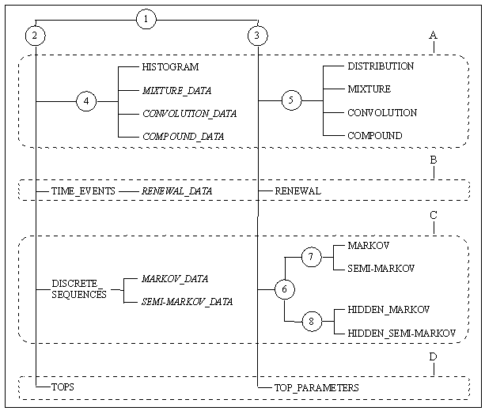
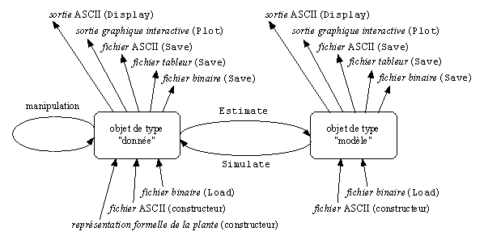

Introduction to the STAT_TOOL module (to be translated)#
Le module STAT d’AMAPmod propose un ensemble de méthodes d’analyse de données à base de probabilités discrètes et de processus stochastiques à temps discret et à espace d’états discret. Ces méthodes font appel soit à des techniques non-paramétriques (par exemple calcul d’une distance entre deux séquences) soit à des techniques paramétriques (par exemple estimation des paramètre d’un mélange fini de lois discrètes à partir d’un échantillon de valeurs discrètes). Le module STAT intègre ainsi un ensemble de méthodes exploratoires pour les échantillons de valeurs discrètes et les échantillons de séquences basé essentiellement sur des techniques non-paramétriques. L’approche paramétrique repose d’une part sur des algorithmes d’estimation efficaces et d’autre part sur des méthodes d’évaluation de l’adéquation du modèle estimé à l’échantillon de données utilisé pour l’estimation. Le coeur du module STAT réside dans l’inférence de processus stochastiques à temps discret et à espace d’états discret à partir d’échantillons de séquences discrètes éventuellement multivariées.
Le module STAT a été conçu pour répondre à un certain nombre de problématiques d’analyse de données dans le cadre de l’étude de la croissance de la plante. Ceci explique d’une part que l’on se soit concentré sur le discret étant donné la part prépondérante de ce type de variable aussi bien qualitative (devenir d’un bourgeon axillaire choisi parmi bourgeon latent, rameau court, rameau long et rameau à développement immédiat) que quantitative (nombre d’entrenoeuds d’un unité de croissance, nombre de cycles d’une pousse annuelle, ordre maximum porté…) dans la description de la structure de la plante. D’autre part, la description sous forme de séquences discrètes qui permet de préserver tout ou partie de l’information structurelle est à la base de l’essentiel des méthodes proposées.
Le module STAT peut aussi être utilisé indépendamment du contexte de l’étude de la croissance des plantes grâce à la possibilité de construire des échantillons de données directement à partir de fichiers ASCII.
L’organisation du module STAT#
Les types manipulés par le module STAT d’AMAPmod appartiennent à deux catégories:
les échantillons de données,
les modèles.
Les types «données» et les types «modèle» se regroupent en applications figurées par les cadres en pointillés dans la Figure 7-1 :
lois et combinaisons de lois (A),
processus de renouvellement (B),
modèles Markoviens (C),
analyse des cimes (D).
{kind=link}

Organisation des types du module STAT_TOOL#
Ces deux niveaux d’organisation sont traduits dans la fig 1. Les différents types sont structurés en une arborescence qui représente la notion d’héritage. Ainsi, les types «données» (type 2) sont des types particuliers (type 1) et les types HISTOGRAM, MIXTURE_DATA, CONVOLUTION_DATA et COMPOUND_DATA sont des types «histogramme» particuliers (type 4). Les sommets numérotés représentent les types dont l’utilisateur ne peut pas créer d’instances (d’objets réels). A chacun de ces types correspond un ensemble de fonctions partagées par tous les types hérités du type en question. Ainsi, tous les types (type 1) partagent un certain nombre de fonctions d’entrée (Load) et de sortie (Display, Plot, Print, Save). Tous les types «données» (type 2) peuvent être utilisés comme argument de la fonction Estimate (distributions, renewal process, Markovian models ou ‘top’ parameters) alors que tous les types «modèle» (type 3) peuvent être utilisés comme argument de la fonction Simulate (distributions, renewal process, Markovian models ou ‘top’ parameters). Les sommets associés à un nom représentent les types dont l’utilisateur peut créer des instances. Ces instances peuvent être obtenues soit par un algorithme à partir d’un objet du module STAT, soit par lecture d’un fichier ASCII ou d’un fichier binaire, soit par extraction à partir d’une représentation de plantes appelée MTG. Les types dont des instance peuvent être crées à partir d’un fichier ASCII ou par extraction sont figurés en fonte standard alors que les types dont les instances sont obligatoirement le résultat d’algorithmes à partir d’un objet du module STAT sont figurés en italique.
Application lois et combinaisons de lois#
Le type 5 traduit la notion de loi discrète. Les types hérités du type 5 effectivement utilisables sont les suivants :
DISTRIBUTION: loi discrète,
MIXTURE: mélange fini de lois discrètes,
CONVOLUTION: produit de convolution de lois discrètes,
COMPOUND: loi composée construite à partir de lois discrètes.
Le type DISTRIBUTION couvre les lois paramétriques discrètes usuelles (binomiale, binomiale négative, Poisson) munies d’un paramètre de translation. Notons que le loi binomiale négative est définie avec un paramètre réel et une probabilité. Les trois autres types de lois discrètes correspondent à des combinaisons de lois discrètes.
Le type 4 traduit la notion d’ensemble de réalisations d’une variable aléatoire discrète. Les types hérités du type 4 effectivement utilisables sont les suivants :
HISTOGRAM: histogram,
MIXTURE_DATA: données générées par un mélange fini de lois discrètes,
CONVOLUTION_DATA: données générées par un produit de convolution de lois discrètes,
COMPOUND_DATA: données générées par une loi composée.
Application processus de renouvellement#
Le type RENEWAL correspond aux processus de renouvellement. Les processus de renouvellement sont construits à partir de lois discrètes, telles que définies dans le type DISTRIBUTION, représentant l’intervalle de temps entre 2 événements et appelée loi inter-événement. Le type TIME_EVENTS correspond à un ensemble de couples de réalisations de deux variables aléatoires, la première traduisant l’intervalle de temps entre deux dates observation et la seconde, le nombre d’événements survenus entre ces deux dates. Très souvent, l’intervalle de temps entre les deux dates observation est le même pour toutes les mesures de nombre d’événements et ce type peut alors être vu comme un histogramme de nombre d’événements survenus pendant un intervalle de temps fixé donné. Le type RENEWAL_DATA hérité du type TIME_EVENTS correspond à des données générées par un processus de renouvellement.
Application modèles Markoviens#
Le type 6 se décomposent en deux types, les types 7 et 8 qui traduisent respectivement la notion de modèle Markovien et de modèle Markovien caché.
Les types hérités du type 7 effectivement utilisables sont les suivants :
MARKOV: chaîne de Markov,
SEMI-MARKOV: semi-chaîne de Markov.
Les types hérités du type 8 effectivement utilisables sont les suivants :
HIDDEN_MARKOV: chaîne de Markov cachée,
HIDDEN_SEMI-MARKOV: semi-chaîne de Markov cachée.
Les chaînes de Markov, de même que les chaînes de Markov cachées sont d’ordre quelconque (dans la pratique limité à 4). Il est possible de s’intéresser à des chaînes de Markov non-homogènes, c’est à dire telles que les probabilités de transition dépendent de l’index. Les lois d’occupation des états des semi-chaînes de Markov et des semi-chaînes de Markov cachées sont des lois discrètes paramétriques telles que définies dans le type DISTRIBUTION avec la restriction que le paramètre de translation est supérieur ou égal à 1 ce qui traduit le fait que l’on reste au moins un instant dans un état. Enfin, ces types de modèle s’appliquent de manière intéressante si le nombre de réalisations possibles de chacune des variables aléatoires indexées est limité (à 10 par exemple). Par contre, il n’y a pas de contraintes sur les natures des états de ces modèles (combinaison quelconque d’états récurrents, transitoires ou absorbants).
Le type DISCRETE_SEQUENCES traduit la notion d’ensemble de séquences discrètes. On entend par séquence discrète une suite de vecteurs aléatoires discrets indexés par un paramètre. Le type MARKOV_DATA, hérité du type DISCRETE_SEQUENCES, correspond à des données générées par des chaînes de Markov ou des chaînes de Markov cachées alors que le type SEMI-MARKOV_DATA, aussi hérité du type DISCRETE_SEQUENCES, correspond à des données générées par des semi-chaînes de Markov ou des semi-chaînes de Markov cachées.
Deux types annexes non-représentés sur la Figure 7-1 font partie de l’application modèles Markoviens :
SEQUENCES: séquences assujetties à des contraintes plus faibles que les séquences représentées dans le typeDISCRETE_SEQUENCESet ne pouvant donc servir d’entrée à l’estimation des paramètres d’un modèle Markovien,
CORRELATION: coefficients de corrélation calculés à partir d’un ensemble de séquences.
Application analyse des cimes#
Le type TOP_PARAMETERS correspond aux paramètres d’une cime (probabilité de croissance axe porteur, probabilité de croissance axe porté et rapport de rythme d’élongation axes portés/axe porteur). Le type TOPS correspond à un ensemble de cimes, c’est-à-dire à un ensemble de systèmes ramifiés avec un seul ordre de ramification.
Enfin, nous avons les cinq types annexes suivants :
VECTORS : ensemble de vecteurs,
VECTOR_DISTANCE : paramètres de définition d’une distance entre vecteurs,
DISTANCE_MATRIX : matrice des distances/dissimilarités entre formes,
CLUSTERS: résultat d’une partition en k groupes d’un ensemble de formes à partir de la matrice des distances entre formes,
REGRESSION: résultats d’une régression simple.
Les fonctions AML du module STAT#
Nous distinguons trois catégories de fonctions :
les fonctions d’entrées/sorties,
les fonctions de manipulation des données,
les fonctions algorithmiques permettant notamment de créer un objet de type «modèle» à partir d’un objet de type «données» par estimation ou de créer un objet de type «données» à partir d’un objet de type «modèle» par simulation.
{kind=link}

Schema de principe d’application des fonctions aux objets#
Les fonctions d’entrées/sorties#
A chaque type figuré en fonte standard sur la Figure 7-2 correspond une forme syntaxique qui permet de définir une instance de ce type dans un fichier ASCII. La forme syntaxique des types «données» se rapproche de tableaux de nombres alors que la forme syntaxique des types «modèle» est construite à partir de mots clés qui traduisent la structure du modèle. Par convention, le séparateur est une suite quelconque d’espaces et de tabulations. Il est possible d’insérer des commentaires (ligne commençant par un # ou fin de ligne après le #) dans ces fichiers ASCII. Les fonctions d’entrée ou constructeur ont pour nom le type de l’objet créé. Par exemple, la fonction Histogram construit l’objet histo de type HISTOGRAM à partir du fichier “exemple.his”.
>>> histo = Histogram("exemple.his")
Les objets de type DISTRIBUTION, MIXTURE, CONVOLUTION, COMPOUND, RENEWAL peuvent être construits à partir de lois discrètes ou de familles de lois discrètes, c’est à dire d’objets de type DISTRIBUTION, MIXTURE, CONVOLUTION, COMPOUND. Les objet de type «données» peuvent être construits soit à partir de fichiers ASCII, soit à partir de structures de données extraites d’un MTG.
Il est possible de visualiser tout objet à l’écran au format ASCII grâce à la fonction Display().
En plus de la forme syntaxique définissant l’objet, différentes informations supplémentaires sont affichées, ce qui permet d’avoir un compte rendu du traitement ayant généré l’objet. Le niveau de détail de ces informations supplémentaires est géré par l’argument optionnel Detail. La forme ASCII d’un objet peut être imprimée par le fonction Print.
Un objet peut être sauvegardé dans un fichier grâce à la fonction Save. Trois formats de fichier sont possibles :
format ASCII (Format->ASCII),
format binaire (Format->Binary),
format Tableur (Format->SpreadSheet).
Les fichiers au format ASCII sont identiques à ce que sort à l’écran la fonction Display() pour un niveau de détail donné. Tout objet du module STAT peut être sauvegardé au format binaire et rechargé grâce à la fonction Load. Les fichiers au format Tableur sont destinées à la mise en page de graphiques en vue de la production de documents.
Un objet peut être visualisé graphiquement grâce à la fonction Plot. Les visualisations graphiques sont faîtes par le logiciel GNUPLOT.
Les fonctions de manipulation des données#
Différentes manipulations sont possibles sur les données. Il est ainsi toujours possible de concaténer des ensembles de données du même type (fonction Merge). De nombreuses manipulations spécifiques sont aussi possibles.
Les fonctions algorithmiques#
Les trois principales fonctions sont la fonction Estimate (distributions, renewal process, Markovian models ou ‘top’ parameters) qui crée un objet «modèle» à partir d’un objet «données» par estimation, la fonction Simulate (distributions, renewal process, Markovian models ou ‘top’ parameters) qui crée un objet de type «données» à parti d’un objet de type «modèle» par simulation et la fonction Compare (distributions, vectors sequences, Markovian models for sequences ou Markovian models). La fonction Compare calcule des mesures de dissimilarités entre histogrammes, ou des distances entre vecteurs ou entre séquences, ou les vraisemblances de séquences discrètes pour une famille de modèles Markoviens (chaîne de Markov, semi-chaîne de Markov, chaîne de Markov cachée ou semi-chaîne de Markov cachée) ou encore des divergences entre modèles Markoviens.
La fonction Clustering réalise la partition en k groupes d’un ensemble de formes à partir de la matrice des distances entre formes. La fonction ComparisonTest compare deux histogrammes au moyen de tests d’hypothèses. La fonction ContingencyTable calcule un tableau de contingence à partir d’un ensemble de vecteurs. La fonction ModelSelectionTest teste l’ordre ou l’agrégation des états d’une chaîne de Markov à partir d’un ensemble de séquences discrètes. La fonction Regression réalise une régression linéaire ou non-paramétrique simple (une seule variable explicative). La fonction ComputeStateSequences permet de segmenter des séquences discrètes en utilisant une chaîne de Markov cachée ou une semi-chaîne de Markov cachée. Cette fonction crée donc un objet de type «données» à partir d’un objet de type «données» initial et d’un objet de type «modèle». La fonction VarianceAnalysis réalise une analyse de variance à un facteur.